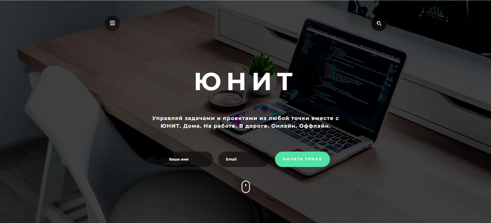
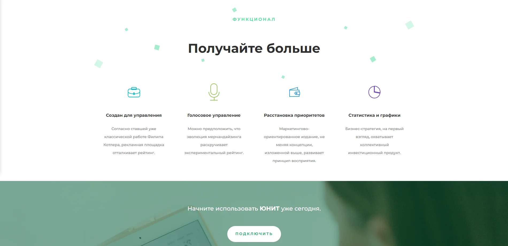
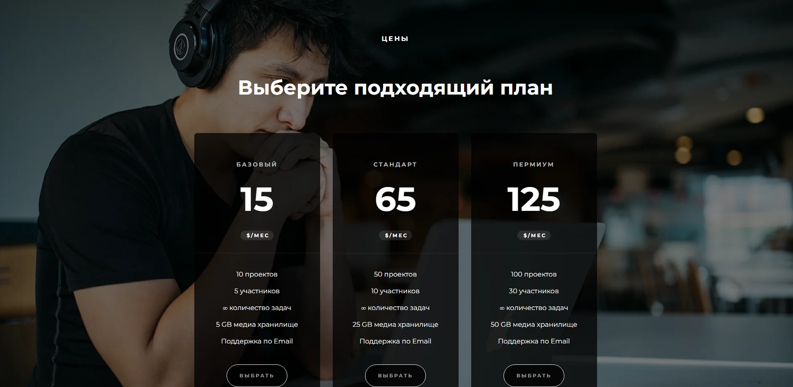

О проекте
Учебный макет для приложения Юнит. Модульный подход при проектировании страницы. Верстка с использованием препроцессора LESS. Использованы svg-графика, hover-эффекты. Адаптивная верстка под планшеты и смартфоны без использования bootstrap. Перевод на mobile-first. Верстка сайта согласно макету с использованием Pixel Perfect.
Детали
-
Клиент:ООО "Unit"
-
Проект:Адаптивный лендинг для приложения "Unit"
-
Верстка:HTML5, CSS3, Pixel Perfect, Java Script, jQuery.
-
Особенности:Модель flex-box, семантический код, метотдология BEM-naming, адаптация mobile-first подходом, плагин Owl-Carousel2, препроцессор LESS.


